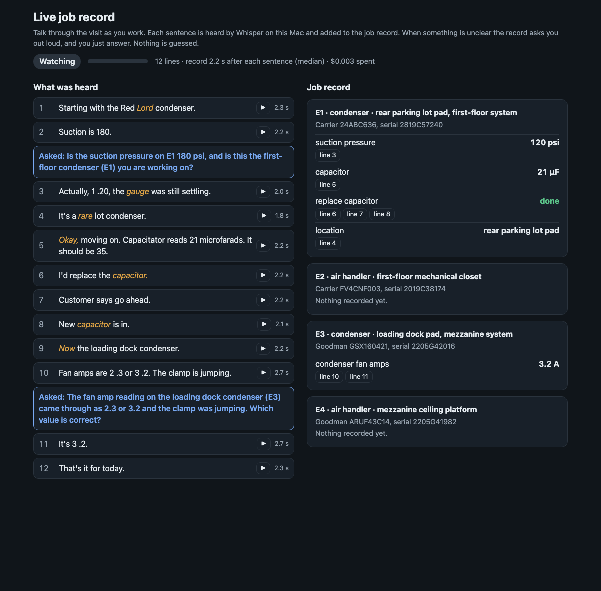

Results
A spoken service visit, turned into a checked job record
A technician talks while working on several units. The system keeps a job record as they go: each reading on the right unit, corrections and moved readings applied, approved work kept apart from finished work, and every value tied to the words and audio it came from.
What this is and is not. Most results on this page come from synthetic visits: scripts voiced by text to speech, with noise mixed in. One visit was read aloud by a person, and live mode was tried with a real microphone. It is a careful bench test of the approach, not a field result.
What was built
- Speech to values. Local Whisper with the job record as context, a parser for spoken numbers and trade units, and a checker that accepts a reading or asks one targeted question. It never edits or fills in a value.
- A live job record. After every spoken line a language model updates the record: readings per unit, work status (proposed, approved, in progress, done, deferred, declined), and readings it will not guess.
- A test bench for live records. Visit scripts that state what each line changes, so the true record is known after every line. Errors are counted the moment they appear and sorted by cause.
What the measurements show
in 8 held-out visits on clear speech, for the best live design. Most were about how a correction or a postponed job is labelled. None recorded unfinished work as done.
true facts kept by a single read of the finished visit on clear speech. The live designs kept 95 to 101.
of the facts survive heavy background talk (0 dB). Most losses are words that never come through, not reasoning errors.
- Simple beats elaborate here. A model that re-reads the visit and keeps its own previous record did better than re-reading from scratch, and left too little room for a heavier memory architecture to be worth building.
- Context helps recognition. Giving Whisper the job record recovered more measurement words (37 to 48 of 70) on the same noisy audio, and lifted exact model numbers from 65% to 97% in the earlier speech tests.
- The open problem is speech and asking, not memory. In heavy noise, asking recovers only a few lost values, and live models leave out some values they heard clearly.
Live mode, on a Mac
The replay is recorded. The same record also runs hands-free from a microphone: the technician clicks Start once and then just talks.

- How it works. The page cuts speech into sentences at pauses. Local Whisper hears each one with the job's equipment list as context, and Claude Haiku updates the whole record. Sentences queue in order, so none is lost while the model works. An unsettled reading is asked about out loud, once, and the page stops listening while it speaks. Talking clearly over the question stops it.
- Speed and cost. The record updates about 3.5 seconds after the speaker stops (about 2.8 seconds after the page sends the sentence), at about $0.015 per visit at the listed API price.
- Accuracy. The four-unit visit read aloud in three rooms (quiet, music, an air duster) was played into live mode from the recording. With the final setup it kept 6 of 9 facts in both runs, with one wrong entry each. Earlier setups also kept 6 of 9 (0 to 3 wrong entries), and one prompt wording that was dropped kept 5. The wrong entries were mostly reasoning, such as a filter job nobody proposed.
- Found by using it. The first sessions with a laptop microphone showed two problems: soft speech was missed while the microphone was still adjusting its gain, and the page heard its own spoken question as the technician. Both are fixed. Tests use the sound levels measured in those sessions, and the second fix was also checked by replaying that session's recording.
- Where it runs. On a Mac with a microphone, not on this hosted page, which only replays saved runs.
Limits
- Synthetic voices and scripted visits. 0 dB babble is a stress test, not a typical job site.
- 8 held-out visits, one run each, one small model (Claude Haiku) at low effort. Small numbers. Live mode was tried by one speaker on one laptop.
- The visits were written by two independent language-model authors from a neutral specification, and every label was re-checked blind. A field result needs real technicians' recordings.
Technical details
Method
- Visits. 8 held-out multi-unit HVAC visits (2 ordinary, 3 mixed, 3 hard; 24 to 38 spoken lines, 2 to 4 units), sealed by hash before any run, plus 2 development visits. Each line lists its effects: a reading, a correction, a reading moved to another unit, a withdrawn reading, a work status, a nameplate fact, or an ambiguity with the answer the technician would give if asked. A blind second labelling disagreed on 3 of 264 lines (plus 3 formatting-only differences). Those 3 are listed and scored apart.
- Conditions. Clear text, and the same lines voiced by macOS TTS, mixed with people talking at 0 dB and recognised by local Whisper large-v3-turbo. Questions get scripted replies (a scripted answer, a repeat or restatement of a recent reading, or "nothing to add"), voiced under the same noise.
- Designs compared, all on one model, prompt and output schema: A reads the finished visit once. A-live re-reads the visit so far after every line. B does the same and also sees its own previous record. R is A-live whose questions come from a fixed rule. +G adds plain-code guards (known fields only, a value must appear in its cited words, "done" held one line).
- Scoring. After every line the record is compared with the truth at that moment. Each error gets one cause: lost or changed by recognition, missing clarification, revision or status, wrong unit, or unsupported. Also counted: final completeness, values recovered by asking, unanswered questions, unsafe "done".
Results, 8 held-out visits
| Design | Clear: live errors | Clear: facts kept | Noisy: live errors | Noisy: facts kept | Noisy: questions (unanswered) |
|---|---|---|---|---|---|
| A, one read at the end | n/a | 101/105 | n/a | 57/105 | 0 |
| A-live | 21 | 97/105 | 14 | 45/105 | 74 (51) |
| B, keeps its own record | 7 | 95/105 | 3 | 50/105 | 74 (43) |
| R, rule-based questions | 19 | 101/105 | 36 | 57/105 | 35 (17) |
Live errors are reasoning errors counted when they appear (wrong unit, missed correction, wrong status, guessed ambiguity, unsupported value), with recognition-caused errors and disputed labels counted apart. Plain-code guards removed 0 to 2 errors and are not shown. Same audio for every design.
Follow-up on the same visits (exploratory, not held out)
| Change | Before | After |
|---|---|---|
| Whisper with the job record as context: measurement words heard | 37/70 | 48/70 |
| ... complete field and value pairs heard | 30/70 | 36/70 |
| ... reading values heard | 60/78 | 59/78 |
| ... identifiers inserted that were never said | 0 | 2 (both low confidence) |
| Realistic technician replies: B's facts kept, noisy | 50/105 | 53/105 |
| ... values lost by recognition, recovered by asking | 1 of 14 | 4 of 15 |
| ... questions left unanswered | 43 of 74 | 12 of 59 |
Where B's noisy readings went: of 80, 43 kept, 16 whose number never reached the transcript, 19 whose number did
but which were left out or marked unsure (often with the measurement word garbled), 2 wrong
(results/live/followup/analysis/where.py).
Failure modes seen
- Words destroyed by noise. "Phenems point nine" for condenser fan amps, "Such an incident 118" for suction. The number survives, the measurement does not, so no model can place it without asking.
- Over-caution in live models. Clearly heard values marked unsure or dropped, more often than by a single end-of-visit read. Question and answer turns in a noisy transcript seem to make this worse.
- Re-measurement conventions. A "no wait" correction logged as a new after-repair reading.
- Context insertions. The job-record prompt can write a known model number into a garbled line, which is why model numbers are only accepted when the audio supports them.
- Read-back is weak as a safety net. In an earlier small test with one speaker, 0 of 4 planted wrong values were caught at read-back.
Earlier speech results (same repository)
- Exact spoken model numbers: 65% without context, 97% with the job record (synthetic, four noise conditions).
- Readings on a real human voice, held out and frozen before scoring: readings lost without a question fell from 35.4% to 14.6% (7 of 48) with the reading checker, which asked on 28% of utterances. No wrong value was accepted in either case. One speaker, scripted lines.
- Real speakers from VoiceCodeBench (59) and COALA were used to check recognition of product codes and plant terms.
Reproduce
Everything runs on one Mac: local Whisper, and the model calls through a subscription login with a hard call cap. Live mode calls the Anthropic API and stops at a fixed spending cap. The replay page is generated from saved runs, so it opens without any model calls.
uv run python scripts/build_live_demo.py # rebuild the replay from saved runs
cd demo && python3 -m http.server 8765 # then open http://127.0.0.1:8765/live/